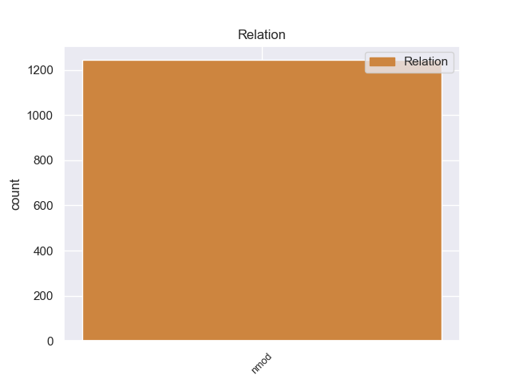
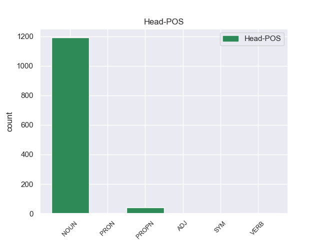
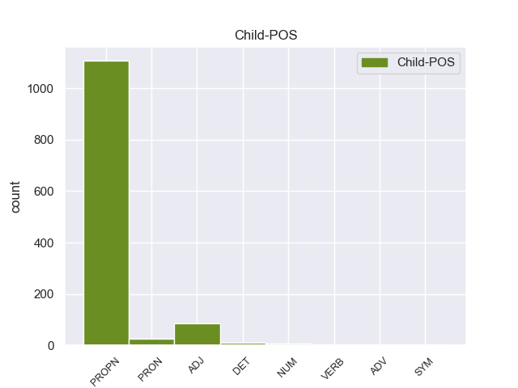

Distribution of features within this leaf



Agreement Rules sorted by frequency.
- When the dependent token is the nominal modifier(nmod) of the head token, and the dependent token is PROPN.
1 De _ _ _ _ 0 _ _ _
2 los _ _ _ _ 0 _ _ _
3 714 _ _ _ _ 0 _ _ _
4 habitantes _ _ _ _ 0 _ _ _
5 , _ _ _ _ 0 _ _ _
6 el _ _ _ _ 0 _ _ _
7 municipio _ _ _ _ 0 _ _ _
8 de _ _ _ _ 0 _ _ _
9 Daggett _ _ _ _ 0 _ _ _
10 estaba _ _ _ _ 0 _ _ _
11 compuesto _ _ _ _ 0 _ _ _
12 por _ _ _ _ 0 _ _ _
13 el _ _ _ _ 0 _ _ _
14 93.28 _ _ _ _ 0 _ _ _
15 % _ _ _ _ 0 _ _ _
16 blancos _ _ _ _ 0 _ _ _
17 , _ _ _ _ 0 _ _ _
18 el _ _ _ _ 0 _ _ _
19 2.38 _ _ _ _ 0 _ _ _
20 % _ _ _ _ 0 _ _ _
21 eran _ _ _ _ 0 _ _ _
22 afroamericanos _ _ _ _ 0 _ _ _
23 , _ _ _ _ 0 _ _ _
24 el _ _ _ _ 0 _ _ _
25 0.84 _ _ _ _ 0 _ _ _
26 % _ _ _ _ 0 _ _ _
27 eran _ _ _ _ 0 _ _ _
28 amerindios _ _ _ _ 0 _ _ _
29 , _ _ _ _ 0 _ _ _
30 el _ _ _ _ 0 _ _ _
31 0.56 _ _ _ _ 0 _ _ _
32 % _ _ _ _ 0 _ _ _
33 eran _ _ _ _ 0 _ _ _
34 asiáticos _ _ _ _ 0 _ _ _
35 , _ _ _ _ 0 _ _ _
36 el _ _ _ _ 0 _ _ _
37 0 _ _ _ _ 0 _ _ _
38 % _ _ _ _ 0 _ _ _
39 eran _ _ _ _ 0 _ _ _
40 isleños isleños NOUN _ Gender=Masc|Number=Plur 0 _ _ _
41 de _ _ _ _ 0 _ _ _
42 el _ _ _ _ 0 _ _ _
43 Pacífico pacífico PROPN _ Gender=Masc|Number=Sing 40 nmod _ _
44 , _ _ _ _ 0 _ _ _
45 el _ _ _ _ 0 _ _ _
46 0.84 _ _ _ _ 0 _ _ _
47 % _ _ _ _ 0 _ _ _
48 eran _ _ _ _ 0 _ _ _
49 de _ _ _ _ 0 _ _ _
50 otras _ _ _ _ 0 _ _ _
51 razas _ _ _ _ 0 _ _ _
52 y _ _ _ _ 0 _ _ _
53 el _ _ _ _ 0 _ _ _
54 2.1 _ _ _ _ 0 _ _ _
55 % _ _ _ _ 0 _ _ _
56 pertenecían _ _ _ _ 0 _ _ _
57 a _ _ _ _ 0 _ _ _
58 dos _ _ _ _ 0 _ _ _
59 o _ _ _ _ 0 _ _ _
60 más _ _ _ _ 0 _ _ _
61 razas _ _ _ _ 0 _ _ _
62 . _ _ _ _ 0 _ _ _
1 El _ _ _ _ 0 _ _ _
2 municipio municipio NOUN _ Gender=Masc|Number=Sing 0 _ _ _
3 de _ _ _ _ 0 _ _ _
4 Republic _ _ _ _ 0 _ _ _
5 ( _ _ _ _ 0 _ _ _
6 en _ _ _ _ 0 _ _ _
7 inglés inglés ADJ _ Gender=Masc|Number=Sing 2 nmod _ _
8 : _ _ _ _ 0 _ _ _
9 Republic _ _ _ _ 0 _ _ _
10 Township _ _ _ _ 0 _ _ _
11 ) _ _ _ _ 0 _ _ _
12 es _ _ _ _ 0 _ _ _
13 un _ _ _ _ 0 _ _ _
14 municipio _ _ _ _ 0 _ _ _
15 ubicado _ _ _ _ 0 _ _ _
16 en _ _ _ _ 0 _ _ _
17 el _ _ _ _ 0 _ _ _
18 condado _ _ _ _ 0 _ _ _
19 de _ _ _ _ 0 _ _ _
20 Marquette _ _ _ _ 0 _ _ _
21 en _ _ _ _ 0 _ _ _
22 el _ _ _ _ 0 _ _ _
23 estado _ _ _ _ 0 _ _ _
24 estadounidense _ _ _ _ 0 _ _ _
25 de _ _ _ _ 0 _ _ _
26 Míchigan _ _ _ _ 0 _ _ _
27 . _ _ _ _ 0 _ _ _
1 Cada _ _ _ _ 0 _ _ _
2 señal _ _ _ _ 0 _ _ _
3 que _ _ _ _ 0 _ _ _
4 el _ _ _ _ 0 _ _ _
5 caporal _ _ _ _ 0 _ _ _
6 hace _ _ _ _ 0 _ _ _
7 es _ _ _ _ 0 _ _ _
8 un _ _ _ _ 0 _ _ _
9 tipo _ _ _ _ 0 _ _ _
10 de _ _ _ _ 0 _ _ _
11 acrobacia _ _ _ _ 0 _ _ _
12 , _ _ _ _ 0 _ _ _
13 en _ _ _ _ 0 _ _ _
14 una _ _ _ _ 0 _ _ _
15 de _ _ _ _ 0 _ _ _
16 ellas _ _ _ _ 0 _ _ _
17 cada _ _ _ _ 0 _ _ _
18 danzante _ _ _ _ 0 _ _ _
19 volador _ _ _ _ 0 _ _ _
20 salta _ _ _ _ 0 _ _ _
21 a _ _ _ _ 0 _ _ _
22 el _ _ _ _ 0 _ _ _
23 vacío _ _ _ _ 0 _ _ _
24 , _ _ _ _ 0 _ _ _
25 sujetado _ _ _ _ 0 _ _ _
26 por _ _ _ _ 0 _ _ _
27 la _ _ _ _ 0 _ _ _
28 cintura _ _ _ _ 0 _ _ _
29 , _ _ _ _ 0 _ _ _
30 boca _ _ _ _ 0 _ _ _
31 abajo _ _ _ _ 0 _ _ _
32 y _ _ _ _ 0 _ _ _
33 afianzándo _ _ _ _ 0 _ _ _
34 se _ _ _ _ 0 _ _ _
35 con _ _ _ _ 0 _ _ _
36 las _ _ _ _ 0 _ _ _
37 piernas _ _ _ _ 0 _ _ _
38 y _ _ _ _ 0 _ _ _
39 gira _ _ _ _ 0 _ _ _
40 13 _ _ _ _ 0 _ _ _
41 veces _ _ _ _ 0 _ _ _
42 cada _ _ _ _ 0 _ _ _
43 uno uno NOUN _ Gender=Masc|Number=Sing 0 _ _ _
44 de _ _ _ _ 0 _ _ _
45 ellos ello PRON _ Definite=Def|Gender=Masc|Number=Plur|PronType=Art 43 nmod _ _
46 , _ _ _ _ 0 _ _ _
47 que _ _ _ _ 0 _ _ _
48 multiplicado _ _ _ _ 0 _ _ _
49 por _ _ _ _ 0 _ _ _
50 los _ _ _ _ 0 _ _ _
51 cuatro _ _ _ _ 0 _ _ _
52 voladores _ _ _ _ 0 _ _ _
53 da _ _ _ _ 0 _ _ _
54 el _ _ _ _ 0 _ _ _
55 resultado _ _ _ _ 0 _ _ _
56 de _ _ _ _ 0 _ _ _
57 52 _ _ _ _ 0 _ _ _
58 , _ _ _ _ 0 _ _ _
59 ya _ _ _ _ 0 _ _ _
60 que _ _ _ _ 0 _ _ _
61 este _ _ _ _ 0 _ _ _
62 número _ _ _ _ 0 _ _ _
63 es _ _ _ _ 0 _ _ _
64 el _ _ _ _ 0 _ _ _
65 símbolo _ _ _ _ 0 _ _ _
66 de _ _ _ _ 0 _ _ _
67 el _ _ _ _ 0 _ _ _
68 ciclo _ _ _ _ 0 _ _ _
69 de _ _ _ _ 0 _ _ _
70 52 _ _ _ _ 0 _ _ _
71 años _ _ _ _ 0 _ _ _
72 de _ _ _ _ 0 _ _ _
73 el _ _ _ _ 0 _ _ _
74 calendario _ _ _ _ 0 _ _ _
75 indígena _ _ _ _ 0 _ _ _
76 o _ _ _ _ 0 _ _ _
77 Xiuhmolpilli _ _ _ _ 0 _ _ _
78 . _ _ _ _ 0 _ _ _
1 Se _ _ _ _ 0 _ _ _
2 abre _ _ _ _ 0 _ _ _
3 paso _ _ _ _ 0 _ _ _
4 en _ _ _ _ 0 _ _ _
5 la _ _ _ _ 0 _ _ _
6 comarca _ _ _ _ 0 _ _ _
7 el _ _ _ _ 0 _ _ _
8 turismo _ _ _ _ 0 _ _ _
9 , _ _ _ _ 0 _ _ _
10 que _ _ _ _ 0 _ _ _
11 cuenta _ _ _ _ 0 _ _ _
12 como _ _ _ _ 0 _ _ _
13 destinos _ _ _ _ 0 _ _ _
14 principales _ _ _ _ 0 _ _ _
15 las _ _ _ _ 0 _ _ _
16 localidades localidade NOUN _ Gender=Fem|Number=Plur 0 _ _ _
17 de _ _ _ _ 0 _ _ _
18 Alcalá _ _ _ _ 0 _ _ _
19 de _ _ _ _ 0 _ _ _
20 el _ _ _ _ 0 _ _ _
21 Júcar _ _ _ _ 0 _ _ _
22 , _ _ _ _ 0 _ _ _
23 Jorquera _ _ _ _ 0 _ _ _
24 y _ _ _ _ 0 _ _ _
25 Villatoya _ _ _ _ 0 _ _ _
26 , _ _ _ _ 0 _ _ _
27 entre _ _ _ _ 0 _ _ _
28 otras otras DET _ Gender=Fem|Number=Plur|PronType=Ind 16 nmod _ _
29 . _ _ _ _ 0 _ _ _
1 El _ _ _ _ 0 _ _ _
2 sencillo _ _ _ _ 0 _ _ _
3 recibió _ _ _ _ 0 _ _ _
4 buenas _ _ _ _ 0 _ _ _
5 críticas _ _ _ _ 0 _ _ _
6 moderadadas _ _ _ _ 0 _ _ _
7 y _ _ _ _ 0 _ _ _
8 premios _ _ _ _ 0 _ _ _
9 logrando _ _ _ _ 0 _ _ _
10 hacer _ _ _ _ 0 _ _ _
11 de _ _ _ _ 0 _ _ _
12 el _ _ _ _ 0 _ _ _
13 álbum álbum NOUN _ Gender=Masc|Number=Sing 0 _ _ _
14 uno _ _ _ _ 0 _ _ _
15 de _ _ _ _ 0 _ _ _
16 los _ _ _ _ 0 _ _ _
17 más _ _ _ _ 0 _ _ _
18 esperados _ _ _ _ 0 _ _ _
19 de _ _ _ _ 0 _ _ _
20 el _ _ _ _ 0 _ _ _
21 2007 2007 NUM _ Gender=Masc|Number=Sing 13 nmod _ _
22 . _ _ _ _ 0 _ _ _
1 Demichelis _ _ _ _ 0 _ _ _
2 , _ _ _ _ 0 _ _ _
3 defensa _ _ _ _ 0 _ _ _
4 de _ _ _ _ 0 _ _ _
5 el _ _ _ _ 0 _ _ _
6 Bayern _ _ _ _ 0 _ _ _
7 Múnich _ _ _ _ 0 _ _ _
8 costará _ _ _ _ 0 _ _ _
9 a _ _ _ _ 0 _ _ _
10 el _ _ _ _ 0 _ _ _
11 conjunto _ _ _ _ 0 _ _ _
12 malacitano _ _ _ _ 0 _ _ _
13 unos _ _ _ _ 0 _ _ _
14 3 _ _ _ _ 0 _ _ _
15 millones _ _ _ _ 0 _ _ _
16 de _ _ _ _ 0 _ _ _
17 euros _ _ _ _ 0 _ _ _
18 , _ _ _ _ 0 _ _ _
19 un _ _ _ _ 0 _ _ _
20 dinero _ _ _ _ 0 _ _ _
21 que _ _ _ _ 0 _ _ _
22 servirá _ _ _ _ 0 _ _ _
23 para _ _ _ _ 0 _ _ _
24 invertir _ _ _ _ 0 _ _ _
25 en _ _ _ _ 0 _ _ _
26 un _ _ _ _ 0 _ _ _
27 zaguero _ _ _ _ 0 _ _ _
28 que _ _ _ _ 0 _ _ _
29 ha _ _ _ _ 0 _ _ _
30 dado _ _ _ _ 0 _ _ _
31 todo _ _ _ _ 0 _ _ _
32 por _ _ _ _ 0 _ _ _
33 ser _ _ _ _ 0 _ _ _
34 de _ _ _ _ 0 _ _ _
35 nuevo nuevo ADV _ Gender=Masc|Number=Sing 39 nmod _ _
36 el _ _ _ _ 0 _ _ _
37 líder _ _ _ _ 0 _ _ _
38 un _ _ _ _ 0 _ _ _
39 puesto puesto NOUN _ Gender=Masc|Number=Sing 0 _ _ _
40 maldito _ _ _ _ 0 _ _ _
41 en _ _ _ _ 0 _ _ _
42 La _ _ _ _ 0 _ _ _
43 Rosaleda _ _ _ _ 0 _ _ _
44 . _ _ _ _ 0 _ _ _
1 Un _ _ _ _ 0 _ _ _
2 60 _ _ _ _ 0 _ _ _
3 % _ _ _ _ 0 _ _ _
4 de _ _ _ _ 0 _ _ _
5 los _ _ _ _ 0 _ _ _
6 110 _ _ _ _ 0 _ _ _
7 millones _ _ _ _ 0 _ _ _
8 de _ _ _ _ 0 _ _ _
9 votantes _ _ _ _ 0 _ _ _
10 aptos _ _ _ _ 0 _ _ _
11 participó _ _ _ _ 0 _ _ _
12 en _ _ _ _ 0 _ _ _
13 las _ _ _ _ 0 _ _ _
14 elecciones _ _ _ _ 0 _ _ _
15 , _ _ _ _ 0 _ _ _
16 un _ _ _ _ 0 _ _ _
17 descenso _ _ _ _ 0 _ _ _
18 con _ _ _ _ 0 _ _ _
19 respecto respecto NOUN _ Gender=Masc|Number=Sing 0 _ _ _
20 a _ _ _ _ 0 _ _ _
21 el _ _ _ _ 0 _ _ _
22 64 _ _ _ _ 0 _ _ _
23 % % SYM _ Gender=Masc|Number=Sing 19 nmod _ _
24 de _ _ _ _ 0 _ _ _
25 hace _ _ _ _ 0 _ _ _
26 cuatro _ _ _ _ 0 _ _ _
27 años _ _ _ _ 0 _ _ _
28 . _ _ _ _ 0 _ _ _
Disagree Examples:
1 MADRID _ _ _ _ 0 _ _ _
2 , _ _ _ _ 0 _ _ _
3 3 _ _ _ _ 0 _ _ _
4 ( _ _ _ _ 0 _ _ _
5 EUROPA _ _ _ _ 0 _ _ _
6 PRESS _ _ _ _ 0 _ _ _
7 ) _ _ _ _ 0 _ _ _
8 Las _ _ _ _ 0 _ _ _
9 tenistas _ _ _ _ 0 _ _ _
10 españolas _ _ _ _ 0 _ _ _
11 Anabel _ _ _ _ 0 _ _ _
12 Medina _ _ _ _ 0 _ _ _
13 , _ _ _ _ 0 _ _ _
14 Carla _ _ _ _ 0 _ _ _
15 Suárez _ _ _ _ 0 _ _ _
16 , _ _ _ _ 0 _ _ _
17 María _ _ _ _ 0 _ _ _
18 José _ _ _ _ 0 _ _ _
19 Martínez _ _ _ _ 0 _ _ _
20 , _ _ _ _ 0 _ _ _
21 Nuria _ _ _ _ 0 _ _ _
22 Llagostera _ _ _ _ 0 _ _ _
23 , _ _ _ _ 0 _ _ _
24 Arantxa _ _ _ _ 0 _ _ _
25 Parra _ _ _ _ 0 _ _ _
26 y _ _ _ _ 0 _ _ _
27 Lourdes _ _ _ _ 0 _ _ _
28 Domínguez _ _ _ _ 0 _ _ _
29 han _ _ _ _ 0 _ _ _
30 decidido _ _ _ _ 0 _ _ _
31 retirar _ _ _ _ 0 _ _ _
32 su _ _ _ _ 0 _ _ _
33 plante _ _ _ _ 0 _ _ _
34 para _ _ _ _ 0 _ _ _
35 disputar _ _ _ _ 0 _ _ _
36 la _ _ _ _ 0 _ _ _
37 próxima _ _ _ _ 0 _ _ _
38 eliminatoria _ _ _ _ 0 _ _ _
39 de _ _ _ _ 0 _ _ _
40 la _ _ _ _ 0 _ _ _
41 Copa _ _ _ _ 0 _ _ _
42 Federación _ _ _ _ 0 _ _ _
43 tras _ _ _ _ 0 _ _ _
44 llegar _ _ _ _ 0 _ _ _
45 a _ _ _ _ 0 _ _ _
46 un _ _ _ _ 0 _ _ _
47 acuerdo acuerdo NOUN _ Gender=Masc|Number=Sing 0 _ _ _
48 con _ _ _ _ 0 _ _ _
49 la _ _ _ _ 0 _ _ _
50 Real _ _ _ _ 0 _ _ _
51 Federación federación PROPN _ Gender=Fem|Number=Sing 47 nmod _ _
52 Española _ _ _ _ 0 _ _ _
53 de _ _ _ _ 0 _ _ _
54 Tenis _ _ _ _ 0 _ _ _
55 ( _ _ _ _ 0 _ _ _
56 RFET _ _ _ _ 0 _ _ _
57 ) _ _ _ _ 0 _ _ _
58 después _ _ _ _ 0 _ _ _
59 de _ _ _ _ 0 _ _ _
60 más _ _ _ _ 0 _ _ _
61 de _ _ _ _ 0 _ _ _
62 cuatro _ _ _ _ 0 _ _ _
63 horas _ _ _ _ 0 _ _ _
64 de _ _ _ _ 0 _ _ _
65 reunión _ _ _ _ 0 _ _ _
66 en _ _ _ _ 0 _ _ _
67 el _ _ _ _ 0 _ _ _
68 Consejo _ _ _ _ 0 _ _ _
69 Superior _ _ _ _ 0 _ _ _
70 de _ _ _ _ 0 _ _ _
71 Deportes _ _ _ _ 0 _ _ _
72 ( _ _ _ _ 0 _ _ _
73 CSD _ _ _ _ 0 _ _ _
74 ) _ _ _ _ 0 _ _ _
75 con _ _ _ _ 0 _ _ _
76 la _ _ _ _ 0 _ _ _
77 mediación _ _ _ _ 0 _ _ _
78 de _ _ _ _ 0 _ _ _
79 el _ _ _ _ 0 _ _ _
80 secretario _ _ _ _ 0 _ _ _
81 de _ _ _ _ 0 _ _ _
82 Estado _ _ _ _ 0 _ _ _
83 para _ _ _ _ 0 _ _ _
84 el _ _ _ _ 0 _ _ _
85 Deporte _ _ _ _ 0 _ _ _
86 , _ _ _ _ 0 _ _ _
87 Jaime _ _ _ _ 0 _ _ _
88 Lissavetzky _ _ _ _ 0 _ _ _
89 . _ _ _ _ 0 _ _ _
1 Otra _ _ _ _ 0 _ _ _
2 alternativa _ _ _ _ 0 _ _ _
3 para _ _ _ _ 0 _ _ _
4 los _ _ _ _ 0 _ _ _
5 techos _ _ _ _ 0 _ _ _
6 planos _ _ _ _ 0 _ _ _
7 de _ _ _ _ 0 _ _ _
8 la _ _ _ _ 0 _ _ _
9 modernidad _ _ _ _ 0 _ _ _
10 sería _ _ _ _ 0 _ _ _
11 exagerar _ _ _ _ 0 _ _ _
12 un _ _ _ _ 0 _ _ _
13 techo _ _ _ _ 0 _ _ _
14 tradicional _ _ _ _ 0 _ _ _
15 para _ _ _ _ 0 _ _ _
16 llamar _ _ _ _ 0 _ _ _
17 la _ _ _ _ 0 _ _ _
18 atención _ _ _ _ 0 _ _ _
19 incluso _ _ _ _ 0 _ _ _
20 más _ _ _ _ 0 _ _ _
21 a _ _ _ _ 0 _ _ _
22 esta _ _ _ _ 0 _ _ _
23 , _ _ _ _ 0 _ _ _
24 como _ _ _ _ 0 _ _ _
25 la _ _ _ _ 0 _ _ _
26 Academia _ _ _ _ 0 _ _ _
27 Estadounidense _ _ _ _ 0 _ _ _
28 de _ _ _ _ 0 _ _ _
29 las _ _ _ _ 0 _ _ _
30 Artes _ _ _ _ 0 _ _ _
31 y _ _ _ _ 0 _ _ _
32 las _ _ _ _ 0 _ _ _
33 Ciencias _ _ _ _ 0 _ _ _
34 de _ _ _ _ 0 _ _ _
35 Kallmann _ _ _ _ 0 _ _ _
36 McKinnell _ _ _ _ 0 _ _ _
37 & _ _ _ _ 0 _ _ _
38 Wood _ _ _ _ 0 _ _ _
39 en _ _ _ _ 0 _ _ _
40 Cambridge _ _ _ _ 0 _ _ _
41 , _ _ _ _ 0 _ _ _
42 Massachusetts _ _ _ _ 0 _ _ _
43 , _ _ _ _ 0 _ _ _
44 teniendo _ _ _ _ 0 _ _ _
45 tres _ _ _ _ 0 _ _ _
46 niveles _ _ _ _ 0 _ _ _
47 de _ _ _ _ 0 _ _ _
48 techo _ _ _ _ 0 _ _ _
49 bajo _ _ _ _ 0 _ _ _
50 a _ _ _ _ 0 _ _ _
51 cuatro _ _ _ _ 0 _ _ _
52 aguas _ _ _ _ 0 _ _ _
53 constituyendo _ _ _ _ 0 _ _ _
54 se _ _ _ _ 0 _ _ _
55 uno _ _ _ _ 0 _ _ _
56 encima _ _ _ _ 0 _ _ _
57 de _ _ _ _ 0 _ _ _
58 otro otro PRON _ Gender=Masc|Number=Sing|PronType=Ind 61 nmod _ _
59 para _ _ _ _ 0 _ _ _
60 una _ _ _ _ 0 _ _ _
61 declaración declaración NOUN _ Gender=Fem|Number=Sing 0 _ _ _
62 enfática _ _ _ _ 0 _ _ _
63 de _ _ _ _ 0 _ _ _
64 refugio _ _ _ _ 0 _ _ _
65 . _ _ _ _ 0 _ _ _
1 Desde _ _ _ _ 0 _ _ _
2 entonces _ _ _ _ 0 _ _ _
3 , _ _ _ _ 0 _ _ _
4 Lee _ _ _ _ 0 _ _ _
5 ha _ _ _ _ 0 _ _ _
6 participado _ _ _ _ 0 _ _ _
7 en _ _ _ _ 0 _ _ _
8 varios _ _ _ _ 0 _ _ _
9 otros _ _ _ _ 0 _ _ _
10 proyectos _ _ _ _ 0 _ _ _
11 de _ _ _ _ 0 _ _ _
12 musicales _ _ _ _ 0 _ _ _
13 antes _ _ _ _ 0 _ _ _
14 de _ _ _ _ 0 _ _ _
15 retornar _ _ _ _ 0 _ _ _
16 a _ _ _ _ 0 _ _ _
17 el _ _ _ _ 0 _ _ _
18 escenario _ _ _ _ 0 _ _ _
19 protagonizando _ _ _ _ 0 _ _ _
20 el _ _ _ _ 0 _ _ _
21 musical musical NOUN _ Gender=Masc|Number=Sing 0 _ _ _
22 de _ _ _ _ 0 _ _ _
23 la _ _ _ _ 0 _ _ _
24 BBC bbc PROPN _ Gender=Fem|Number=Sing 21 nmod _ _
25 " _ _ _ _ 0 _ _ _
26 The _ _ _ _ 0 _ _ _
27 Sound _ _ _ _ 0 _ _ _
28 of _ _ _ _ 0 _ _ _
29 Musicals _ _ _ _ 0 _ _ _
30 " _ _ _ _ 0 _ _ _
31 . _ _ _ _ 0 _ _ _
1 Algunos _ _ _ _ 0 _ _ _
2 de _ _ _ _ 0 _ _ _
3 los _ _ _ _ 0 _ _ _
4 principales _ _ _ _ 0 _ _ _
5 edificios _ _ _ _ 0 _ _ _
6 son _ _ _ _ 0 _ _ _
7 la _ _ _ _ 0 _ _ _
8 iglesia iglesia NOUN _ Gender=Fem|Number=Sing 0 _ _ _
9 de _ _ _ _ 0 _ _ _
10 el _ _ _ _ 0 _ _ _
11 Salvador salvador PROPN _ Gender=Masc|Number=Sing 8 nmod _ _
12 " _ _ _ _ 0 _ _ _
13 Na _ _ _ _ 0 _ _ _
14 Séniakh _ _ _ _ 0 _ _ _
15 " _ _ _ _ 0 _ _ _
16 ( _ _ _ _ 0 _ _ _
17 1675 _ _ _ _ 0 _ _ _
18 ) _ _ _ _ 0 _ _ _
19 , _ _ _ _ 0 _ _ _
20 la _ _ _ _ 0 _ _ _
21 iglesia _ _ _ _ 0 _ _ _
22 de _ _ _ _ 0 _ _ _
23 San _ _ _ _ 0 _ _ _
24 Gregorio _ _ _ _ 0 _ _ _
25 ( _ _ _ _ 0 _ _ _
26 1670 _ _ _ _ 0 _ _ _
27 ) _ _ _ _ 0 _ _ _
28 , _ _ _ _ 0 _ _ _
29 y _ _ _ _ 0 _ _ _
30 las _ _ _ _ 0 _ _ _
31 iglesias _ _ _ _ 0 _ _ _
32 barbicanas _ _ _ _ 0 _ _ _
33 de _ _ _ _ 0 _ _ _
34 San _ _ _ _ 0 _ _ _
35 Juan _ _ _ _ 0 _ _ _
36 el _ _ _ _ 0 _ _ _
37 Apóstol _ _ _ _ 0 _ _ _
38 ( _ _ _ _ 0 _ _ _
39 1683 _ _ _ _ 0 _ _ _
40 ) _ _ _ _ 0 _ _ _
41 y _ _ _ _ 0 _ _ _
42 de _ _ _ _ 0 _ _ _
43 la _ _ _ _ 0 _ _ _
44 Resurrección _ _ _ _ 0 _ _ _
45 de _ _ _ _ 0 _ _ _
46 Cristo _ _ _ _ 0 _ _ _
47 ( _ _ _ _ 0 _ _ _
48 1670 _ _ _ _ 0 _ _ _
49 ) _ _ _ _ 0 _ _ _
50 . _ _ _ _ 0 _ _ _
1 Fue _ _ _ _ 0 _ _ _
2 en _ _ _ _ 0 _ _ _
3 estos _ _ _ _ 0 _ _ _
4 años _ _ _ _ 0 _ _ _
5 en _ _ _ _ 0 _ _ _
6 que _ _ _ _ 0 _ _ _
7 él _ _ _ _ 0 _ _ _
8 tuvo _ _ _ _ 0 _ _ _
9 un _ _ _ _ 0 _ _ _
10 gran _ _ _ _ 0 _ _ _
11 acercamiento _ _ _ _ 0 _ _ _
12 con _ _ _ _ 0 _ _ _
13 ese _ _ _ _ 0 _ _ _
14 país _ _ _ _ 0 _ _ _
15 , _ _ _ _ 0 _ _ _
16 ya _ _ _ _ 0 _ _ _
17 que _ _ _ _ 0 _ _ _
18 participó _ _ _ _ 0 _ _ _
19 como _ _ _ _ 0 _ _ _
20 invitado _ _ _ _ 0 _ _ _
21 de _ _ _ _ 0 _ _ _
22 Mercedes _ _ _ _ 0 _ _ _
23 Sosa _ _ _ _ 0 _ _ _
24 en _ _ _ _ 0 _ _ _
25 el _ _ _ _ 0 _ _ _
26 Festival festival NOUN _ Gender=Masc|Number=Sing 0 _ _ _
27 Internacional _ _ _ _ 0 _ _ _
28 de _ _ _ _ 0 _ _ _
29 la _ _ _ _ 0 _ _ _
30 Canción canción PROPN _ Gender=Fem|Number=Sing 26 nmod _ _
31 de _ _ _ _ 0 _ _ _
32 Viña _ _ _ _ 0 _ _ _
33 de _ _ _ _ 0 _ _ _
34 el _ _ _ _ 0 _ _ _
35 Mar _ _ _ _ 0 _ _ _
36 de _ _ _ _ 0 _ _ _
37 1992 _ _ _ _ 0 _ _ _
38 y _ _ _ _ 0 _ _ _
39 colaboró _ _ _ _ 0 _ _ _
40 además _ _ _ _ 0 _ _ _
41 con _ _ _ _ 0 _ _ _
42 importantes _ _ _ _ 0 _ _ _
43 artistas _ _ _ _ 0 _ _ _
44 chilenos _ _ _ _ 0 _ _ _
45 como _ _ _ _ 0 _ _ _
46 Isabel _ _ _ _ 0 _ _ _
47 Parra _ _ _ _ 0 _ _ _
48 , _ _ _ _ 0 _ _ _
49 Congreso _ _ _ _ 0 _ _ _
50 y _ _ _ _ 0 _ _ _
51 Los _ _ _ _ 0 _ _ _
52 Jaivas _ _ _ _ 0 _ _ _
53 . _ _ _ _ 0 _ _ _